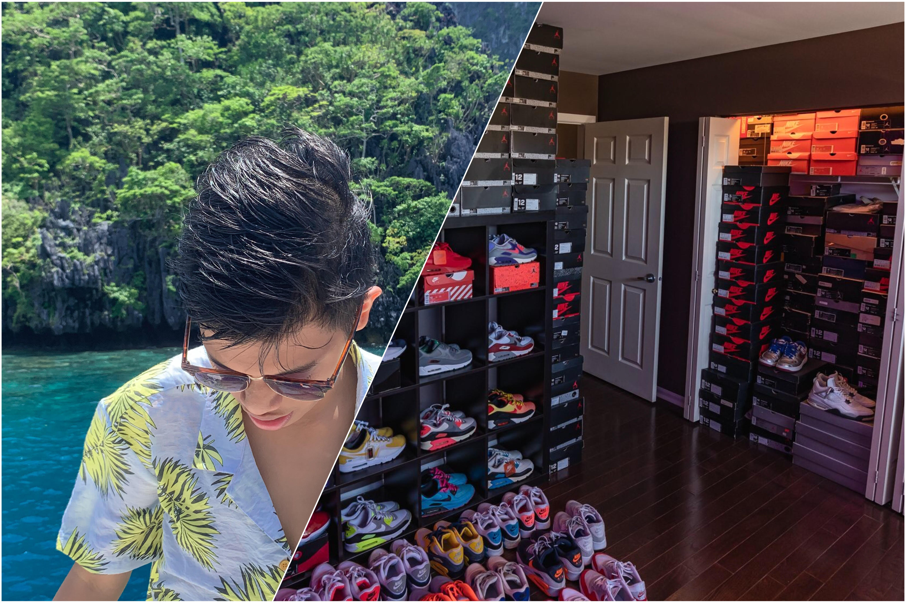
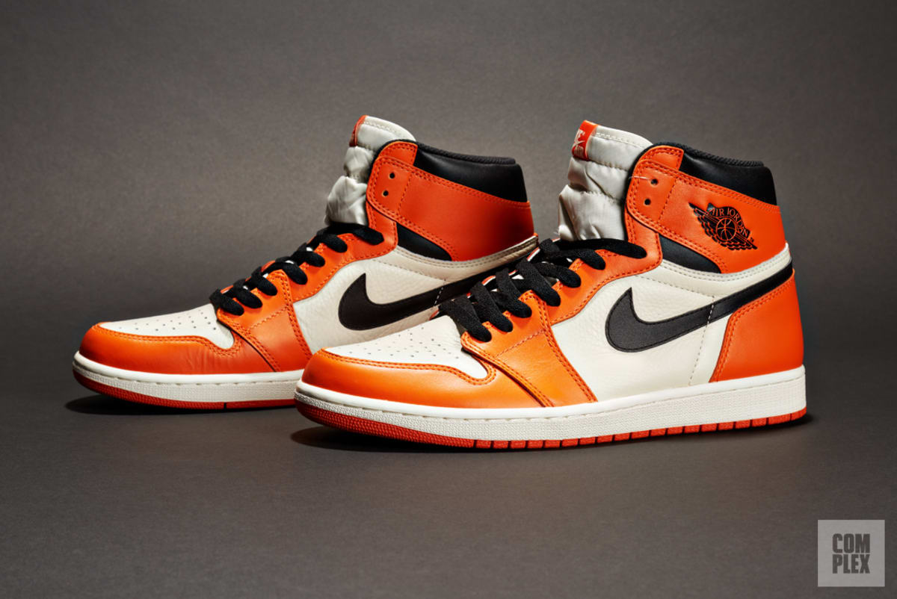
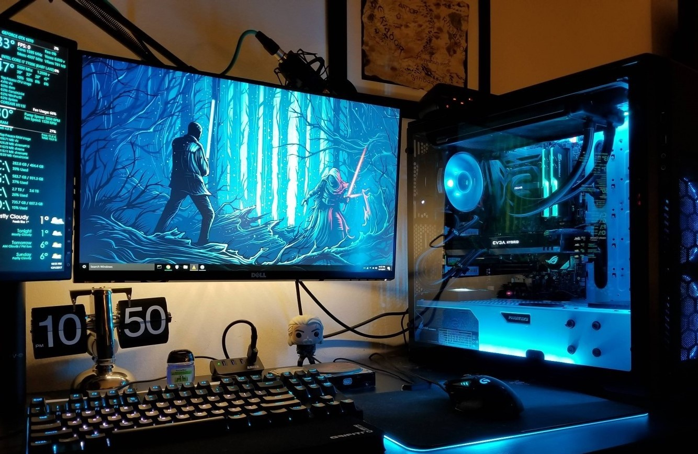
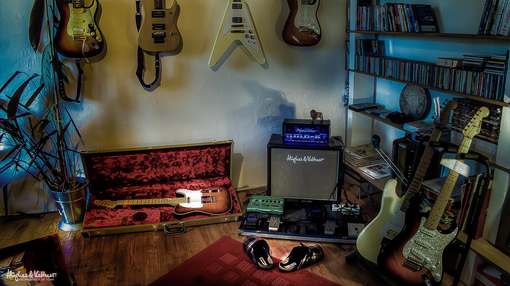
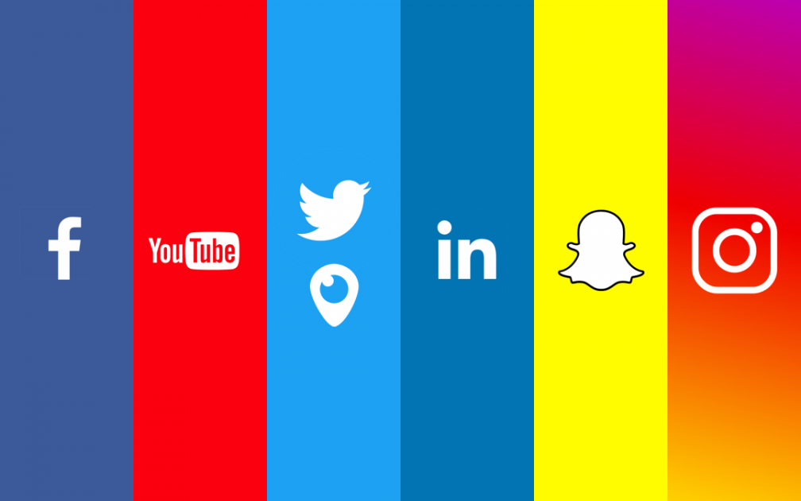

FLIGHT CLUB
HOME
SHOES
MICHAEL JORDAN
ABOUT
GALLERY
Flight Club
About the Author
I am Jeff Bryan G. Valle, 15 years old and I am a sneaker enthusiast. I love collecting shoes and I have been in the sneaker scene for a bit long now. I just love how the culture, the history, the market, and even the people of its community is showing love to them sneakers. The sneaker world of today is a whole different thing, quite the main reason why I started to love them.


Personal Favorite Shoe
The Jordan 1 in the "Reverse Shattered Backboard" colorway is my personal fave out of all the Jordans out there. The blend of orange, white, and black accents just make the pair so clean. Class, comfort, and style all in one shoe.

Gaming
I am also fund of games, especially online ones. I also love building a setup, a pc, and many more related to tech and gaming. I love the gaming side of tech. PC building became my thing since quarantine started. (Beware, RTX 3080 is waving!)

Music
I naturally love music and I am fond of playing various instruments. I know how to play the guitar, the bass, the piano, and many more. I use music and these instruments to calm and relax myself. My fave instrument is the bass.

Follow me on my Social Media Accounts!
Facebook - Bryan Valle
Instagram - @bry.valle
Twitter - @bryanvalleee
KEEP IN TOUCH
HOME
SHOES
MICHAEL JORDAN
ABOUT
GALLERY
https://stackoverflow.com/questions/40625070/how-to-use-css-sprite-correctly
https://sneakernews.com/wp-content/uploads/2019/05/adidas-yeezy-350-v2-black-fu9006-2.jpg?w=1140
https://i.pinimg.com/736x/c9/0e/72/c90e7263ce3b9e2ec4a95388e7d1e8b8.jpg
https://1.bp.blogspot.com/-VW-ymuqg-lc/XxLpblGxE4I/AAAAAAAABGI/BhuTlY6-5W0E2oJ5eHTZmV1QVt77S0cBgCLcBGAsYHQ/s1080/social-media-updates.png